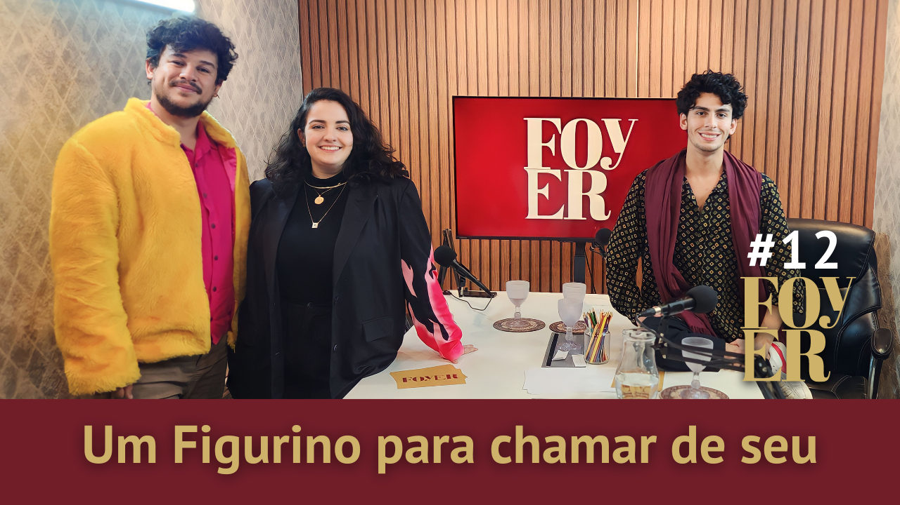

Foto — Divulgação
Programa
Um figurino para chamar de seu! com Marcos Valadão - Foyer #12
Nada como estar bem vestido para anunciar o nosso décimo segundo episódio não?! É mas para isso nós imploramos pela ajuda de um expert em figurinos!…